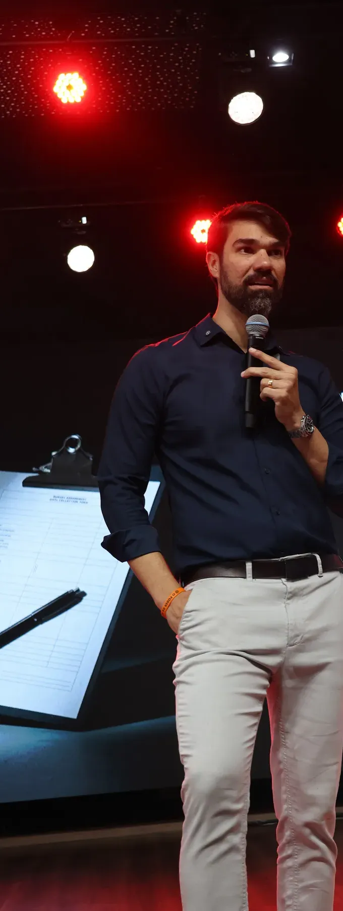
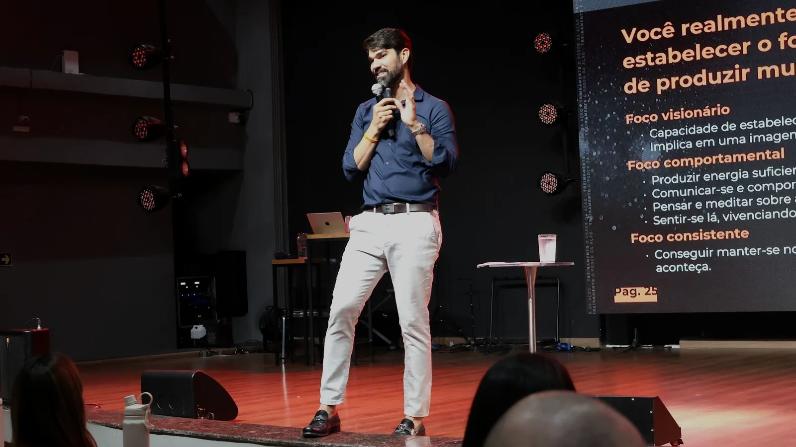

Saúde Emocional
Aprenda a dominar suas emoções, controlar a ansiedade, reduzir o estresse e recuperar o equilíbrio mental com neurociência e Coaching Sistêmico.

Imersão presencial · baseada no best-seller
com Gustavo Sampaio
Você sabe que tem potencial. Mas algo está travando você. Em um dia, você sai com ferramentas comprovadas e um plano de ação para destravar a sua vida em 6 áreas.
23 de janeiro · sábadodas 8h30 às 17h30, em Goiânia — GO
O best-seller que já transformou milhões de vidas, agora ao vivo, num treinamento presencial com o Gustavo Sampaio.
Aprenda a dominar suas emoções, controlar a ansiedade, reduzir o estresse e recuperar o equilíbrio mental com neurociência e Coaching Sistêmico.
Aprenda a aumentar sua renda, investir com inteligência e conquistar liberdade financeira mesmo sem se considerar “bom com dinheiro”.
Acesse seu estado máximo de produtividade, coragem e foco com técnicas práticas e validadas, mesmo que você se considere procrastinador.
Acelere seu crescimento profissional, alcance promoções, estruture seu negócio com clareza, posicione sua autoridade e escale resultados com consistência.
Melhore sua forma de se comunicar, criar conexões profundas, resolver conflitos com cônjuges, filhos, colegas e fortalecer vínculos com você mesmo.
Descubra seu propósito de vida, conecte-se com seus valores, desperte autenticidade e viva com mais sentido, força interior e clareza.
Você vai sair do treinamento com energia, plano de ação e uma certeza poderosa:
“Agora eu sei exatamente o que fazer. E eu vou fazer.”

Você vai enxergar, com precisão cirúrgica, o que está te travando e por que seus resultados não decolaram até agora.
Nada de teoria vazia. Você sai com um plano de ação pronto para colocar a mão na massa e colher resultado rápido.
Métodos usados pelas pessoas de maior sucesso para mudar padrões, acelerar decisões e romper ciclos de estagnação.
Você vai destravar sua melhor versão, despertar sua coragem e sentir uma força interna que talvez nem soubesse que existia.
Potencial sem ação não muda nada.
Nada de conteúdo raso e motivação barata: um dia para transformar intenção em ação.
O seu próximo nível começa com uma decisão.
Se você quer ir para o seu próximo nível, esse evento é para você.
Gustavo Sampaio
Empresário, estrategista e palestrante, Gustavo Sampaio construiu sua base de liderança e alta performance ao longo de seis anos no Banco do Brasil, após ser aprovado em concurso público. Hoje lidera pessoas, projetos e processos voltados ao desenvolvimento pessoal e corporativo.
Essa busca por superação se reflete na paixão por desafios extremos de alta performance e inteligência emocional: travessias no Deserto do Saara e do Atacama, nos Lençóis Maranhenses e a subida ao acampamento-base do Everest.
Mais do que transmitir conhecimento, o propósito dele é provocar movimento: despertar indivíduos, fortalecer lideranças e transformar intenção em ação.
Garanta sua vaga hoje com condições exclusivas e prepare-se para elevar seus negócios e sua vida pessoal a um novo patamar.
Para quem vai sozinho
Traga alguém com você
Leve a sua equipe
De R$ 1.745,00
por apenas6x R$ 287,98
ou R$ 1.535,00 à vista
Economia de R$ 210,00 Levar minha equipeOutra quantidade de ingressos, nota no CNPJ ou condição especial: fale direto com o comercial no WhatsApp, sem formulário.
Fazer meu orçamentoTemos cotas de patrocínio para empresas que querem apresentar a marca a uma plateia de empresários e líderes. Fale com a gente e receba as opções.
Quero patrocinarO Poder da Ação combina conteúdo, reflexão e exercícios práticos para ajudar você a identificar padrões, tomar novas decisões e aplicar mudanças reais na vida pessoal e profissional.
Para quem sabe que pode viver mais, mas percebe que está preso à procrastinação, à falta de foco, a padrões emocionais ou a decisões que nunca saem do papel. A imersão é indicada para empresários, líderes, profissionais e pessoas que desejam assumir o controle da própria vida e transformar intenção em ação.
Sim. O evento é uma experiência totalmente diferente do livro. Você vai viver o conteúdo ao vivo com o Gustavo Sampaio, com exercícios práticos, ferramentas inéditas e uma intensidade impossível de sentir apenas lendo.
No sábado, 23 de janeiro de 2027, das 8h30 às 17h30, em Goiânia — GO. O endereço exato ainda está sendo definido e será divulgado em breve.
Não. Os lugares são livres e respeitam a ordem de chegada.
Sim. A programação é organizada com pausas para garantir melhor aproveitamento ao longo da experiência.
Recomenda-se levar snacks leves e água para maior conforto durante o evento. As opções de alimentação próximas serão divulgadas junto com o local.
Sim. Ao concluir a imersão, você receberá seu certificado de participação no O Poder da Ação.
O credenciamento começa às 7h, uma hora e meia antes do início da programação. O endereço será divulgado em breve.
Ainda precisa de ajuda? Chame o nosso time no WhatsApp.
Um dia, presencial, com o Gustavo Sampaio. Sábado, 23 de janeiro de 2027, em Goiânia.
Quero garantir meu ingresso